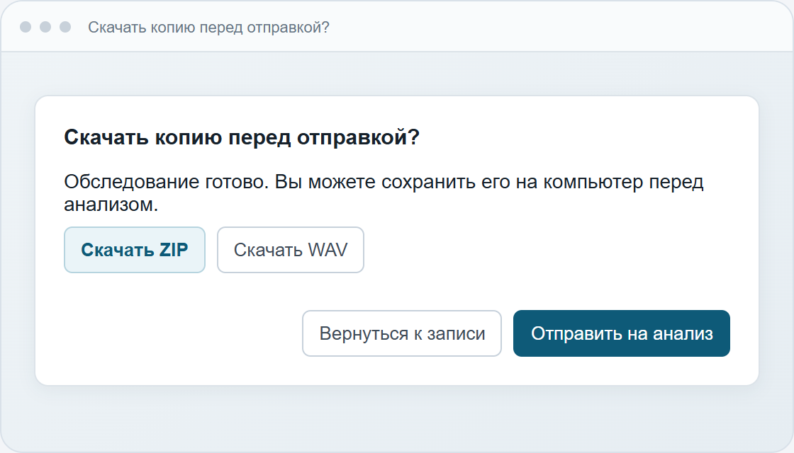
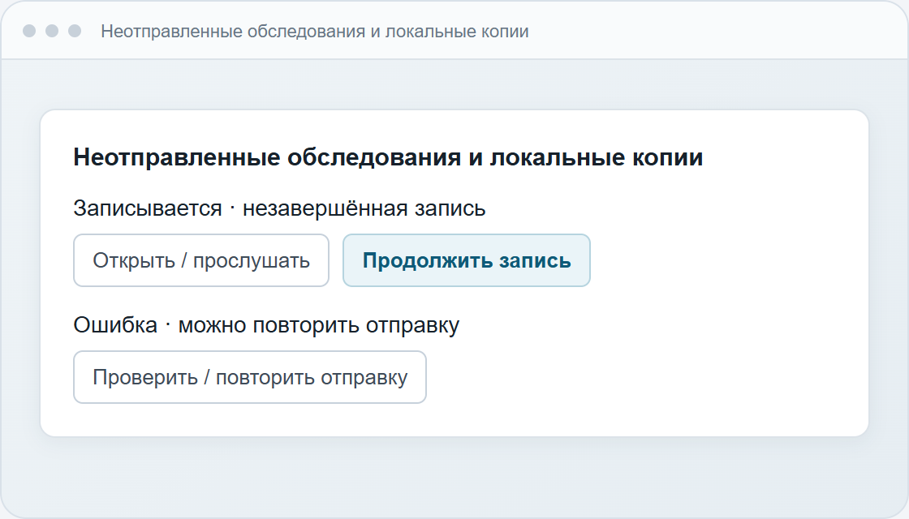
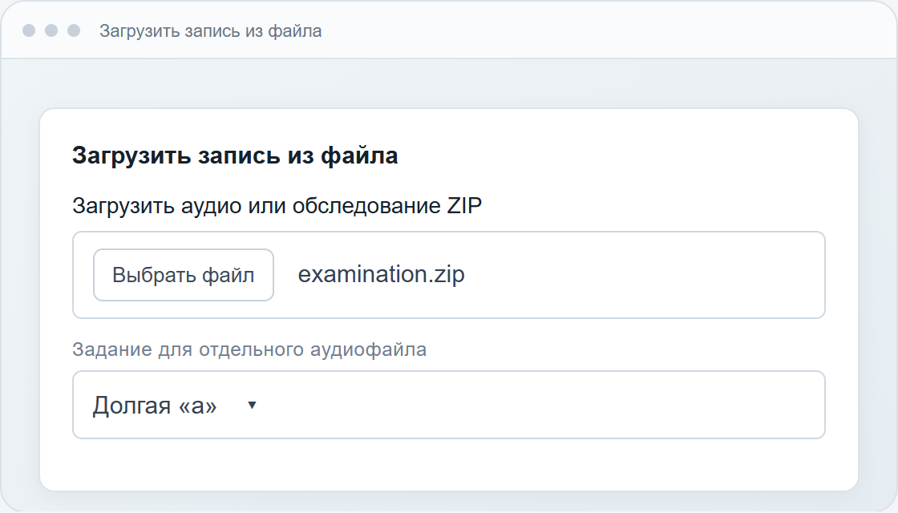

Нажмите значок замка рядом с адресом сайта, разрешите доступ к микрофону и обновите страницу.
Памятка врачу · около 10 минут
Скачать PDF
Как провести обследование голоса
Подготовьте пациента, проведите 14 заданий, сохраните резервную копию и отправьте запись на анализ. При сбое восстановите сохранённую часть обследования.
Главное правило записи
Тихое помещение, один и тот же микрофон и расстояние около 30 см от пациента до устройства на протяжении всего теста.
Новый рабочий режим
Так выглядит экран после «Начать обследование»
Обычная страница скрывается. Врач видит только текущее задание, инструкцию, текст для пациента и управление записью.
Обследование голосаСледуйте инструкции на экране
Расстояние 30 см
Прервать тест
Микрофон включён · устройство не перемещать
Задание 1 из 14Попытка 1 из 3
Долгая «а»
ИНСТРУКЦИЯ ВРАЧУ
Попросите пациента сделать нормальный вдох и тянуть звук «а» ровно, на обычной громкости, как можно дольше.
ЧТО СКАЗАТЬ ПАЦИЕНТУ
«А-а-а-а-а…» ровно, обычной громкостью
-
1
Подготовьте пациента и устройство
Закройте Zoom, Teams, Telegram и другие программы, которые могут использовать микрофон. Не используйте Bluetooth-гарнитуру. По возможности отключите шумоподавление, автоматическое усиление и другие «улучшения» звука.
Пациенту: сидеть спокойно, держать голову прямо и выполнять задания обычным голосом, если в задании не сказано иначе.≈ 30 смТихо · без гарнитуры · устройство неподвижно -
2
Выберите пациента
На экране «Обследование» откройте список пациентов. Найдите нужного по фамилии, имени или отчеству и нажмите «Выбрать». Для нового пациента нажмите «Добавить пациента», заполните ФИО и нажмите «Сохранить и выбрать».
Проверьте ФИО до начала записи. В старой карточке без имени нажмите «Указать ФИО» — прежние обследования останутся в ней. ФИО сохраняется в вашей учётной записи.Нажмите здесьПАЦИЕНТЫВыберите пациентаПоиск по ФИОИИИванов Иван ИвановичОбследований пока нетВыбрать -
3
Проверьте микрофон
Нажмите «Проверить микрофон». Разрешите браузеру доступ к микрофону и попросите пациента произнести несколько слов в течение четырёх секунд.
✓Можно продолжать, когда появится:
«Микрофон принимает звук. Можно проводить тестирование».Если проверка не пройдена: убедитесь, что выбран нужный микрофон, увеличьте уровень входа и повторите проверку.Сначала проверьте микрофонШаг обязателенРазрешите доступ и произнесите несколько слов.
● Микрофон принимает звук -
4
Запустите тестирование
После успешной проверки станет доступна кнопка «Провести тестирование». Нажмите её, прочитайте памятку на экране, отметьте подтверждение и выберите «Начать обследование».
Если включена калибровка, сначала соблюдайте тишину и дождитесь окончания тестовых сигналов. Начинайте задание по приглашению на экране.
С этого момента не меняйте микрофон, громкость и положение устройства.✓ Микрофон проверенНажмите после проверкиПеред обследованиемОтключите «улучшения» звука.
☑ Я проверил(а) настройки -
5
Проведите 14 заданий
Читайте пациенту инструкцию с экрана. Для каждого задания нажмите «Начать попытку», дождитесь выполнения и нажмите «Готово». Выполните указанное число попыток и переходите к следующему упражнению.
- Не подсказывайте во время записи и не говорите одновременно с пациентом.
- Следите, чтобы индикатор не показывал «ПЕРЕГРУЗ».
- Если пациент ошибся или был посторонний шум, нажмите «Перезаписать задание».
ЗАДАНИЕ 1 ИЗ 14Попытка 1 из 3Долгая «а»
Сделайте нормальный вдох и тяните звук ровно, на обычной громкости, как можно дольше.
Скажите: «А-а-а…» -
6
Прослушайте и отправьте
После последнего задания откроется список записей. Прослушайте каждую. Неудачное задание можно перезаписать отдельно — остальные записи сохранятся.
Когда всё проверено, нажмите «Отправить на анализ». В окне «Скачать копию перед отправкой?» можно скачать ZIP или WAV. Затем нажмите «Отправить на анализ» и дождитесь результата.
Чтобы отправить позже, выберите «Завершить без отправки». Запись появится в списке локальных обследований.
✓Готово.
Результат появится в разделе «Мои исследования».Прослушайте заданияФинальный шаг1Долгая «а»00:12▶Перезаписать2Голос вверх00:04▶Перезаписать3Самый тихий голос00:03▶Перезаписать
Автосохранение и резервная копия
Во время записи браузер сохраняет звук примерно каждые две секунды. После сбоя последние секунды могут быть потеряны.
Перед отправкой выберите «Скачать ZIP», чтобы сохранить звук, калибровку и разметку заданий. Для прослушивания отдельно от сервиса подойдёт WAV. Можно сразу перейти к анализу.
На общем компьютере скачайте нужные ZIP и удалите свои локальные копии. При выходе они остаются в браузере, а при очистке его данных могут исчезнуть.

Продолжить запись или повторить отправку
Войдите под своей учётной записью в том же браузере. На странице «Обследование» откройте «Неотправленные обследования и локальные копии».
Прервалась запись. Нажмите «Продолжить запись», подключите тот же микрофон и повторите прерванную попытку. Если изменились микрофон или частота записи, сохраните ZIP и начните новое обследование. После прерванной калибровки начните её заново.
Прервалась отправка. Восстановите подключение и нажмите «Проверить / повторить отправку». Если сервер уже сохранил результат, откроется готовое исследование.

Загрузить обследование из файла
На странице «Обследование» раскройте «Загрузить запись из файла» и выберите ZIP. Прослушайте попытки, проверьте калибровку и пациента, затем нажмите «Анализировать».
Для отдельного аудиофайла укажите задание. Чтобы дополнить открытое обследование, отметьте «Добавить аудиофайл как новую попытку в текущее обследование» перед выбором файла.
Незавершённый ZIP можно дополнить файлами недостающих заданий. Для продолжения пошаговой записи откройте локальную копию в браузере.
Импорт — до 128 МиБ и 30 минут. Для отправки звук вместе с калибровкой должен занимать менее 49 МиБ.

Если что-то пошло не так
Подвиньте устройство до 30 см, проверьте выбранный микрофон и уровень входа, затем повторите проверку.
Немного увеличьте расстояние или уменьшите уровень микрофона. Задание с перегрузом перезапишите.
Откройте «Обследование» в том же браузере и аккаунте. Найдите сохранённую часть в локальных обследованиях и нажмите «Продолжить запись».
Запись приостанавливается, отправка блокируется. Скачайте ZIP или WAV, освободите место и нажмите «Повторить локальное сохранение». Если браузер запретил хранение, разрешите его для этого сайта.
Откройте сохранённую локальную запись и используйте «Проверить / повторить отправку». Система проверит, был ли анализ уже завершён.
Скачайте копию. В другой вкладке войдите в ту же учётную запись, вернитесь к записи и повторите отправку.
Для отправки этой записи войдите в исходную учётную запись. Локальные обследования разных аккаунтов отображаются отдельно.
Порядок обследования
Выбрать пациента→Проверить микрофон→14 заданий→Прослушать→Скачать ZIP→Отправить